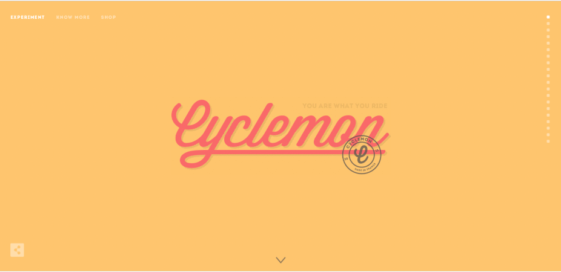

Divine Proportions
Bold by Nature
boldbynature.comThe website designers of Bold by Nature use design proportaions.Design proportions is the use of 'The Golden Ratio' in the art, architechure, and even web design. Mathematically this proportion may be explained with the Fibonacci sequence where each successive term is the sum of the previous two terms. This ratio seems to produce an aesthetically pleasing balance. The creators of this site use the proportions of each section of the page to approximate the Golden Ratio. The width and height of the viewport are divided by 1.618. This is the space for the main focus of the page (the image of pets). The remaining space of the viewport is again divided by 1.618 and this then becomes the space for the next element. Our eye follows this decending sequence spiral to the name of the company in the top left corner of the page.
Colors
Sennep
www.sennep.comColor catches the eye, and elicits an emotional reaction. Colors that are pleasing to the user and make the user feel happy and will increase the consumers engagement on the website. Sennep's website uses bold colorful backgrounds with sharp contrasting font of white or black. The background color changes as the user scrolls down the landing page. These colors guide the user to additional detail information that is finally presented on a white background.
Web Safe Fonts
Cyclemon
cyclemon.com
Web safe fonts are able to adapt to every browser on any device. This ensures that the intended fonts are displayed correctly evey time. If fonts are not supported by the end user's browser, difficulties with design and funtionality may occur. Cyclemon keeps their website uniform and consistant by using only 2 fonts. The first font is a script font and is only used for the company name. The 2nd font is a sans serif font of only capital letters. They use font size to add interest in headings and links. This makes the site very readable